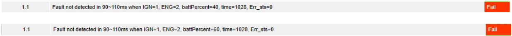

Signal Length, Value, Description 불일치 4건을 식별했습니다.
BLACK BOX VALIDATION ARTIFACTS
CANoe/CAPL 기반 차량 ECU 검증
요구사항을 테스트 조건과 판정 기준으로 전환한 과정부터 CAPL 자동화, 결함 기록, 실제 수행 화면까지 한 페이지에서 확인할 수 있습니다.
OVERVIEW
테스트 수행 흐름
요구사양 분석 → CANdb·CANoe·Panel 환경 구성 → 수동 시험 → CAPL 자동화 시험 → 정적·동적 검증 → 결함 분석 및 회귀 테스트
CODE
최신 수신 프레임을 확인한 뒤에 측정 타이머를 시작하도록 동기화 유틸리티를 분리했습니다. 아래는 Battery_Percent_Low.can에서 직접 작성한 부분을 그대로 옮긴 발췌입니다.
기준 프레임 동기화 — 기대한 신호 값이 실제로 수신된 것을 확인한 뒤에만 1ms 주기 타이머를 기동합니다.
void waitBattReference(int timeoutMs , int data)
{
if (TestWaitForMessage(BATT_01_10ms, timeoutMs) == 1)
{
TestGetWaitEventMsgData(battRef_msg);
if (battRef_msg.Batt_Percent == data){
testWaitForTimeout(9);
setTimerCyclic(t_1ms ,1);
}
else{
while(1){
if (TestWaitForMessage(BATT_01_10ms, timeoutMs) == 1){
TestGetWaitEventMsgData(battRef_msg);
if (battRef_msg.Batt_Percent == data){
testWaitForTimeout(9);
setTimerCyclic(t_1ms ,1);
break;
}
}
}
}
}
}전수 조합 판정 — Batt_Percent 0~100 × Ignition 0/1 × Engine 0/1을 모두 돌면서, 검출을 기대하는 조합과 기대하지 않는 조합을 각각 다른 기준으로 판정합니다.
/* 14,15 + IGN=1 + ENG=1 일 때만 fault level 2 기대 */
expectFault = (i == 1 && j == 1 && battPercent <= 15);
waitBattReference(20, battPercent);
while(time_cnt_ms <= 5100)
{
@sysvar::UDS::Send_msg = 1;
if(TestWaitForMessage(Fault_sts_Rsp, 20) == 1)
{
TestGetWaitEventMsgData(faultRsp_msg);
if(expectFault)
{
if(faultRsp_msg.BATT_Percent_Err_sts == 2)
{
if(time_cnt_ms >= 4900 && time_cnt_ms <= 5100)
{
faultDetectedInWindow = 1;
break;
}
else
{
timingError = 1;
TestStepFail("1.4",
"Fault detected out of time window when IGN=%d, ENG=%d, Batt_Percent=%d, time=%dms",
i, j, battPercent, time_cnt_ms);
break;
}
}
}
else
{
/* fault를 기대하지 않는 모든 경우는 0 유지가 정상 */
if(faultRsp_msg.BATT_Percent_Err_sts != 0)
{
unexpectedStateDetected = 1;
TestStepFail("1.5",
"Unexpected state detected when IGN=%d, ENG=%d, Batt_Percent=%d, Err_sts=%d, time=%dms",
i, j, battPercent, faultRsp_msg.BATT_Percent_Err_sts, time_cnt_ms);
break;
}
}
}
}- Detection·Recovery·Clear 시나리오 자동화
- CAN Signal·System Variable 기반 기대값 판정
- 경계값과 선행 조건 조합 입력
- 판정은
TestStepPass·TestStepFail로 기록해 조건과 실제 값을 함께 남김
대표 문제 해결 — Fresh Frame 동기화
- 증상메시지 송신 방식 변경 후 이전 프레임을 기준으로 타이머가 시작돼 Detection 시점 판정이 흔들렸습니다.
- 원인 분석CAN Trace Timestamp와 CAPL Flag 전환 시점을 비교해 최신 Reference Frame 수신 전 측정이 시작됨을 확인했습니다.
- 수정
waitBattReference·waitIGNReference에서TestWaitForMessage로 최신 수신 프레임을 확인한 뒤setTimerCyclic으로 1ms 타이머를 시작하도록 변경했습니다. - 재검증경계값·Timing 시나리오를 CAPL 회귀 테스트로 반복 실행해 동일 판정 기준이 유지되는지 확인했습니다.
TEST
4건정적 결함
11건동적 결함
CAPL반복 회귀 테스트
| 테스트 | 요구 기준 | 실제 결과 | 판정 |
|---|---|---|---|
| Batt Percent 경계값 | 15% 조건 반영 | 15%에서 Fault 미검출 | 결함 검출 |
| IGN Cycle | 50 Cycle 경계 | Off-by-One 동작 확인 | 결함 검출 |
| Steering Timing | 50±10ms | 약 1000±10ms | 결함 검출 |
대표 검출 결과
- 요구사양 7개 고장 시나리오를 CAPL 스크립트 6종·테스트케이스 24개로 구현하고 입력값을 전수 조합해 수행 (예: Batt Percent 시나리오 1건이 101 × Ignition 2 × Engine 2 = 404조합)
- 정적 결함 4건: Signal Length, Value, Description 불일치
- 동적 결함 11건: 경계값, 선행 조건, Recovery, Timing 오류
- Batt Percent 15% 경계값과 IGN 50 Cycle Off-by-One 확인
- Steering Timing 요구사양 50±10ms 대비 약 1000±10ms 검출
- Batt Voltage 회복 임계 15.0V가 CANdb Factor 0.001 미적용으로 raw 15(15mV)에서만 동작
결함별 실제 판정 화면
동적 결함 11건 가운데 10건은 CAPL 테스트 리포트의 판정 행을 그대로 남겼습니다. 각 행에는 입력 조건과 관측값이 함께 기록됩니다. Brake·Accel·Vehicle 독립 검출 결함 1건은 캡처가 없어 문서로만 정리했습니다.
Batt Percent 15% — 요구 검출 구간 4900~5100ms에서 Fault 미검출
Batt Percent 80% — 동일 구간에서 미검출, 등호 조건 누락
 IGN Cycle — 요구 50 Cycle과 달리
IGN Cycle — 요구 50 Cycle과 달리  Batt Voltage 회복 — raw 14400~15000 전 구간 회복 실패. 요구 임계 15.0V가 Factor 0.001 미적용으로 raw 15(15mV)에서만 동작
Batt Voltage 회복 — raw 14400~15000 전 구간 회복 실패. 요구 임계 15.0V가 Factor 0.001 미적용으로 raw 15(15mV)에서만 동작
 Batt Voltage High — IGN=0 · ENG=0 선행조건 위반 상태에서도
Batt Voltage High — IGN=0 · ENG=0 선행조건 위반 상태에서도  Battery Charging —
Battery Charging —  Ignition Status Error —
Ignition Status Error —  Steering Timing — 요구 50±10ms 대비 약 984~993ms에 검출
Steering Timing — 요구 50±10ms 대비 약 984~993ms에 검출
 Steering —
Steering —
IGN Cycle — 요구 50 Cycle과 달리 Cycle_cnt=49에서 Clear 동작 (Off-by-One)
Batt Voltage 회복 — raw 14400~15000 전 구간 회복 실패. 요구 임계 15.0V가 Factor 0.001 미적용으로 raw 15(15mV)에서만 동작
Batt Voltage High — IGN=0 · ENG=0 선행조건 위반 상태에서도 Err_sts=2 검출
Battery Charging — ENG=0에서도 검출, Engine 선행조건 미반영
Ignition Status Error — IGN=3(Error) 입력에 101ms·5109ms 모두 Err_sts=0

Engine Status Error —ENG=2(Fault) 입력에 1028ms까지 Err_sts=0
Steering Timing — 요구 50±10ms 대비 약 984~993ms에 검출
Steering — IGN=0 선행조건 위반 상태에서도 검출
DOCUMENT
각 결함을 재현 조건, 기대 결과, 실제 결과, 영향도와 개선 방향으로 문서화했습니다.
경계값, 선행 조건, Recovery, Timing 오류 11건을 식별했습니다.
CAN Trace Timestamp와 입력 조건을 기준으로 동일 현상을 반복 확인했습니다.
Fresh Frame 수신 이후 측정을 시작하도록 판정 기준을 고정했습니다.
DEMO
실제 CANoe 프로젝트 구성과 자동화 시험, Panel·Trace, 결함 결과 화면입니다.